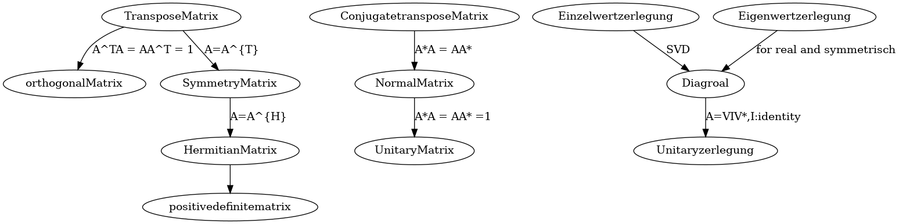

Math
Table of Contents
Statistic
Gauss distribution
标准高斯分布的积分包含了高斯积分
Co-variance matrix 协方差矩阵
for i = {1…n}, \(x_{i}\) is a random variable, which belong to Gaussian distribution
set \[ X = \left( \begin{aligned} x_{1} \\ x_{2}\\ . \\. \\x_{n} \end{aligned}\right) \]
\[ \bar{X} = \left( \begin{aligned} \bar{x}_{1} \\ \bar{x}_{2}\\ . \\. \\ \bar{x}_{n} \end{aligned} \right) \] co-variance matrix \(\Sigma = E [(X-\bar{X})(X-\bar{X})^{T} ]\)
\begin{equation} \Sigma = \left( \begin{array}{c} x_{1}-\bar{x}_{1} \\ x_{2}-\bar{x}_{2} \\ x_{3}-\bar{x}_{3} \\ .. \\ x_{n}-\bar{x}_{n} \end{array} \right) \left( \begin{array}{ccccc} x_{1}-\bar{x}_{1} & x_{2}-\bar{x}_{2} & x_{3}-\bar{x}_{3} & .. & x_{n}-\bar{x}_{n} \end{array} \right) \end{equation}对角线上是对应元素的方差，其他是相对于两个元素的协方差
Maximun likelihood
according to the given example finding the most likely distribution model 1, assign each instance a probability to be happen 2, descripte the the probability of all such instance happens 3, logarithm the probability 4, partial derivative the logarithm 5, set the partial derivative to be 0, get the probability in 1 step
linear Argebra
Matrix
Graph
digraph diagramm {
TransposeMatrix -> orthogonalMatrix[label = "A^TA = AA^T = 1"];
TransposeMatrix -> SymmetryMatrix[label= "A=A^{T}"];
SymmetryMatrix -> HermitianMatrix[label= "A=A^{H}"];
HermitianMatrix -> positivedefinitematrix;
ConjugatetransposeMatrix -> NormalMatrix[label = "A*A = AA*"];
NormalMatrix -> UnitaryMatrix[label = "A*A = AA* =1"] ;
Einzelwertzerlegung -> Diagroal [label = "SVD"] ;
Eigenwertzerlegung -> Diagroal [label = "for real and symmetrisch"];
Diagroal -> Unitaryzerlegung [label ="A=VIV*,I:identity"];
}

transpose Matrix
\(A^{T}\)
symmetry conjugate
\[ A^{H}\] symmetry and complex conjugate matr
Symmetry Matrix
\[ A = A^{T}\]
orthogonal matrix
实数酉矩阵 \[ {\displaystyle Q^{T}=Q^{-1}\Leftrightarrow Q^{T}Q=QQ^{T}=I}\] 得该矩阵的转置矩阵为其逆矩阵
Hermitian matrix
A = symmetry conjugate of A (共轭对称) \[ A = A^{H}\], \(a_{i,j} = \bar{a_{j,i}}\)
埃尔米特矩阵，厄米特矩阵，厄米矩阵,所有元素对称出共轭
Conjugate transpose Matrix
\[ A^{*} = (\bar{A})^{T} = \bar{A^{T}}\] 共轭转置矩阵, 先共轭再转置，还是先转置再共轭都可以。
Normal Matrix
\[ A^{*}A = A A^{*}\] 正定矩阵, 是转置和本身满足交换律 \[ A = URDU^{-1} \] 可酉变换
Unitary Matrix
\[ A^{*}A = A A^{*} = I \] 酉矩阵，是正定矩阵, 即转置和本身满足交换律，而且等于 I
Eigenwertzerlegung
对于矩阵求特征值特征向量，特征值分解，但是要求必须是方阵，如果不是，先 要转换： A = a*a.T
\[ A=UBU^T \]
import numpy as np a = np.mat([[1,2,3,4],[1,1,1,1]]) A = a*a.T B, U = np.linalg.eig(A) print("eigenvalue of A : ") print(B) print("eigenvalue of a :(should be equal to the following) ") print(np.sqrt(B)) print("eigenvactor : ") print(U)
Einzelwertzerlegung
但是对于一般矩阵，不是方阵，可以奇异值分解： \[ a = UBV^T , a^{t} = VBU^{T} \] \[ A = aa^{T} = UB^{2}U^{T}\] \[ A^{'}=a^{T}a=VB^{2}V^{T}\]
import numpy as np a = np.mat([[1,2,3,4],[1,1,1,1]]) U, B, Vt = np.linalg.svd(a) print("left eigenvalue : ") print(U) print("eigenvactor of a : ") print(B) print("right eigenvalue : ") print(Vt)
Transform
Jacobin matrix
wikipedia chinese link englich link
for \[ Y_{m} = f(X_{n}), Y =(y_{1}, y_{2}, y_{3}....y_{m}), X = (x_{1} ,x_{2}....x_{n}) \] \[ d_{Y} = J d_{x}\], \[ {\displaystyle \mathbf {J} ={\begin{bmatrix}{\dfrac {\partial \mathbf {f} }{\partial x_{1}}}&\cdots &{\dfrac {\partial \mathbf {f} }{\partial x_{n}}}\end{bmatrix}}={\begin{bmatrix}{\dfrac {\partial f_{1}}{\partial x_{1}}}&\cdots &{\dfrac {\partial f_{1}}{\partial x_{n}}}\\\vdots &\ddots &\vdots \\{\dfrac {\partial f_{m}}{\partial x_{1}}}&\cdots &{\dfrac {\partial f_{m}}{\partial x_{n}}}\end{bmatrix}}} \] 由球坐标系到直角坐标系的转化由 F: ℝ+ × [0, π] × [0, 2π) → ℝ3 函数给出， 其分量为： \[ {\displaystyle {\begin{aligned}x&=r\sin \theta \cos \varphi ;\\y&=r\sin \theta \sin \varphi ;\\z&=r\cos \theta .\end{aligned}}} \] 此坐标变换的雅可比矩阵是 \[ {\displaystyle \mathbf {J} _{\mathbf {F} }(r,\theta ,\varphi )={\begin{bmatrix}{\dfrac {\partial x}{\partial r}}&{\dfrac {\partial x}{\partial \theta }}&{\dfrac {\partial x}{\partial \varphi }}\\[1em]{\dfrac {\partial y}{\partial r}}&{\dfrac {\partial y}{\partial \theta }}&{\dfrac {\partial y}{\partial \varphi }}\\[1em]{\dfrac {\partial z}{\partial r}}&{\dfrac {\partial z}{\partial \theta }}&{\dfrac {\partial z}{\partial \varphi }}\end{bmatrix}}={\begin{bmatrix}\sin \theta \cos \varphi &r\cos \theta \cos \varphi &-r\sin \theta \sin \varphi \\\sin \theta \sin \varphi &r\cos \theta \sin \varphi &r\sin \theta \cos \varphi \\\cos \theta &-r\sin \theta &0\end{bmatrix}}.} \] 其雅可比行列式为 r2 sin θ，由于 dV = dx dy dz，如果做变数变换的话其体 积元(Volume element)，dV，会变成：dV = r2 sin θ dr dθ dφ。
Advanced Math Method
Fourier Problem
Fourier Series
任意周期函数都可以写成若干正余弦函数在不同频率的叠加， 假设目标函数为\(f(t)\) so \(f(t) = \frac{a_{0}}{2}+\sum_{n=0}^{\infty } a_{n}\sin(n\omega t+\phi_n)\)
or \(f(t) = \frac{a_{0}}{2}+\sum_{n=0}^{\infty } a_{n}\sin(n\omega t) + \sum_{n=0}^{\infty } a_{n}\cos(n\omega t)\)
And There is series orthometric basis (1, \(\sin(n \omega_t)\), \(\cos(n \omega_t)\)).
f(x) can also be wrote with complex form, \(f(t) = \sum^{+\infty}_{k = -\infty}C_{k}e^{ikx}\), where \(C_{k} = \frac{1}{2\pi}\int^{\pi}_{-\pi}f(x)e^{-ikx}dx\)
Fourier Transfromation
set \(\omega t = \theta\), we use \(e^{\theta j} = e^{ \omega t j} = \cos\theta + j\sin\theta\) to multipy all terms in \(f(x)\), which invokes factor \(\omega\).
SO \(f(t) \rightarrow F(\omega) = \int_{-\infty}^{+\infty} f(t) e^{-j \omega t}dt\) and its inverse transfromation: \(F(\omega) \rightarrow f(t) = \int_{-\infty}^{+\infty}F(\omega)e^{j\omega t} d\omega\)
Laplace Transfromation
If \(f(x)\rightarrow \infty |_{x\rightarrow\infty}\) ,we can use \(e^{-\sigma t}\) to eliminate divergence.
Laplace transfromation : \(f(t) \rightarrow L(w) = \int_{-\infty}^{\infty}f(t)e^{-\sigma t}e^{-j\omega t} dt\)
or \(f(t)\rightarrow L(w) =\int_{-\infty}^{\infty}f(w)e^{-st}dt\), where \(s=\sigma + j \omega\)
note: firstly force to convergence, then fourier transfromed.
Z-transform
\[ X_{s}(t) = \sum^{+\infty}_{k=-\infty}\delta(t-kT)x(t)\] where \(x(t)\) is the extractly continue signal function, \(\delta(t-Kt)\) presents that we only measured at time Kt, \(X_{s}(t)\) shows us all the measurements at time of…-2T, -T, 0, T, 2T, 3T…
The Fourier Transform of the measurements are \(X_{F}\), \[X_{F} = \int^{\infty}_{-\infty} \sum^{\infty}_{-\infty} \delta(t-kT)x(t) e^{-j\omega t} dt = \sum^{\infty}_{-\infty}x[kT]e^{-jwkT}\]
for \(Z =e^{iwT}\), \(X_{F} = \sum^{\infty}_{\infty}x[k]Z^{-k}\) , this is Z Transform aber \(\Omega = \omega T\), \(X_{F} = \sum^{\infty}_{-\infty} x[k]e^{-j\Omega k}\), this is Distinct Fourier Transform
Distinct Fourier Transform
for \(f(t) = \sum^{+\infty}_{k = -\infty}C_{k}e^{ikx}\), where \(C_{k} = \frac{1}{2\pi}\int^{\pi}_{-\pi}f(x)e^{-ikx}dx\), we only consider that, f(x) only has N items, from k=0, to N-1, \[f(x) = C_{0} + C_{1}e^{ix}+C_{i2x}+C_{i3x}+.....+C_{N-1}e^{i(N-1)x}\] and we has exactly N measurements points, \(f_{0}, f_{1}....f_{N-1}\), and we image that those N points is exactly in a period,which is from 0 to \(2\pi\), so… set \(w = e^{\frac{2i\pi}{N}}\) \[f(0\frac{2\pi}{N} ) = C_{0} + C_{1} + C_{2}+...+C_{N-1}\] \[f(1\frac{2\pi}{N} ) = C_{0} + C_{1}w + C_{2}w^{2}+...+C_{N-1}w^{N-1}\] \[f(2\frac{2\pi}{N} ) = C_{0} + C_{1}w^{2} + C_{2}w^{4}+...+C_{N-1}w^{2(N-1)}\] \[f(3\frac{2\pi}{N} ) = C_{0} + C_{1}w^{3} + C_{2}w^{6}+...+C_{N-1}w^{3(N-1)}\] \[f((N-1)\frac{2\pi}{N} ) = C_{0} + C_{1}w^{N-1} + C_{2}w^{2(N-1)}+...+C_{N-1}w^{(N-1)(N-1)}\] Here it is
\begin{equation} \left( \begin{array}{c} f_{0} \\ f_{1} \\ f_{2} \\ ....\\ f_{N} \end{array} \right) = \left( \begin{array}{ccccc} 1 & 1 & 1 & ...& 1\\ 1 & w & w^{2} & ...& w^{N-1}\\ 1 & w^{2} & w^{4} & ...& w^{2(N-1)}\\ ...&...&...&...&...\\ 1 & w^{N-1} & w^{2(N-1)} & ...& w^{(N-1)(N-1)}\\ \end{array} \right) \left( \begin{array}{c} C_{0} \\ C_{1} \\ C_{2} \\ ....\\ C_{N} \end{array} \right) \end{equation}We can have exactly all coefficient of C.
if we have only N measurements, but we want to have a general solution for all possible items of f(t), for \(f(t) = \sum^{+\infty}_{k = -\infty}C_{k}e^{ikx}\),
\begin{equation} \left( \begin{array}{c} f_{0} \\ f_{1} \\ f_{2} \\ ....\\ f_{N} \end{array} \right) = \left[ \begin{array}{ccccc} 1 & 1 & 1 & ...& 1\\ 1 & w & w^{2} & ...& w^{N-1}\\ 1 & w^{2} & w^{4} & ...& w^{2(N-1)}\\ ...&...&...&...&...\\ 1 & w^{N-1} & w^{2(N-1)} & ...& w^{(N-1)(N-1)}\\ \end{array} \right] \left( \begin{array}{c} ...+C_{-N} + C_{0}+C_{N}+... \\ ...+C_{-N+1}+ C_{1}+C_{N+1}+... \\ ...+C_{-N+2}+ C_{2}+C_{N+2}+... \\ ...\\ ...+C_{-1}+ C_{N-1}+C_{2N-1} +... \end{array} \right) \end{equation}All possible solutions can be satisfied. denote matrix \(w\) as Fourier Matrix: F, \[X = FC\] , \[C = F^{-1}X\]
Fast Fourier Transform
we here only consider about \(F^{-1}\), so denote it as \(F\),
\begin{equation} F_{4} = \left[ \begin{array}{cccc} 1 & 1 & 1 & 1\\ 1 & w & w^{2} & w^{3}\\ 1 & w^{2} & w^{4}& w^{6)}\\ 1 & w^{3} & w^{6}& w^{9}\\ \end{array} \right] \end{equation} \begin{equation} \bar{F}_{4} = \left[ \begin{array}{cccc} 1 & 1 & 1 & 1\\ 1 & w^{2} & w & w^{3}\\ 1 & w^{4} & w^{2}& w^{6)}\\ 1 & w^{6} & w^{3}& w^{9}\\ \end{array} \right] = \left[ \begin{array}{cc} F_{2} & D_{2}F_{2}\\ F_{2} & -D_{2}F_{2} \end{array} \right] \end{equation}\[X = \begin{bmatrix} f_{0} \\ f_{1} \\....\\f_{N-1} \end{bmatrix}\]
\[F_{N}X = \bar{F}_{N}\begin{bmatrix} f_{0} \\ f_{2} \\f_{4}\\...\\f_{N-2} \\ f_{1} \\ f_{3}\\f_{5}\\...\\f_{N-1} \end{bmatrix} =\begin{bmatrix} F_{N/2} & D_{N/2}F_{N/2} \\ F_{N/2} & -D_{N/2}F_{N/2} \end{bmatrix} \begin{bmatrix} f_{0} \\ f_{2} \\f_{4}\\...\\f_{N-2} \\ f_{1} \\ f_{3}\\f_{5}\\...\\f_{N-1} \end{bmatrix} = \begin{bmatrix} I & D_{N/2} \\ I & -D_{N/2} \end{bmatrix} \begin{bmatrix} F_{N/2} & \\ & F_{N/2} \end{bmatrix} \begin{bmatrix} X_{even} \\ X_{odd} \end{bmatrix} \]
\[F_{N}X = \begin{bmatrix} I & D_{N/2} \\ I & -D_{N/2} \end{bmatrix} \begin{bmatrix} F_{N/2} X_{even} \\ F_{N/2}X_{odd} \end{bmatrix} \]
always recursive to \(D_2\), that is
Convolution law
Green function propagate function segment \[ f(x) \] \[ f(x) = \int_{-\infty}^{\infty} f(t)\delta(x-t)dt \]
convolution \[ (g \ast f)(x) = \int_{-\infty}^{\infty}f(t)g(x-t)dt \]
Kalman Filter
descripation
For a continus system we can estimate the next predict state based on current optimized (best, precise) state and its uncertainies. if there is next observe state, we can combine them to a next optimized state and get its uncertainies, and ready for next iterative.
Estimatation Function:
\[X_{k} = FX_{k-1} + B \mu_{k} + \omega_{k}\]
\(X\) stands for the state, with \(n\times a\) \(F\) stands for the state Operator with \(n\times n\) \(B\) stands for contoller operator \(\omega\) is the current system uncertainies and \(Cov(\omega) = Q\) with \(n \times n\)
Revise Function: \[Z_{k} = HX_{k} + \nu_{k}\]
\(Z\) stands for the observe state, with \(a\times a\) \(H\) stands for Observe Operator with \(a \times n\) \(\nu\) is the observation uncertainies and \(Cov(\nu) = R\) with \(a \times a\) H = \[ \frac{H}{\partial x_{1}}\], \[ \frac{H}{\partial x_{2}}\], \[ \frac{H}{\partial v}\], \[ \frac{H}{\partial \alpha}\],
kalman filter process
assumpation: we know current state \(X_{k}\), and its uncertainies \(\Sigma_{k}\)
- estimatation
\[X_{k+1}^{p} = F X_{k} \] \[ \Sigma^{p}_{k+1} = F \Sigma_{k}F^{T} + Q_{k}\] \(\Sigma_{k}^{p}, \Sigma_{k+1}^{p}, Q_{k}\) all with \(n \times n\)
2, kalman filter calcaletation \[KF = \frac{ \Sigma_{k}^{p}H^{T}} {(H \Sigma_{k}^{p}H^{T} + R_{k})}\] with \(n \times a\): because Numerator has \(n \times a\) and denominator has \(a \times a\)
3, Revise resulte \[X_{k+1} = X_{k+1}^{p} + KF(Z_{k} -HX_{k+1}^{p})\]
\[\Sigma_{k+1} = (I-KF * H) \Sigma_{k+1}^{p}\]
python code
# _*_ coding:utf-8 _*_ import numpy as np import matplotlib.pyplot as plt # 创建一个0-99的一维矩阵 z = [i for i in range(100)] z_watch = np.mat(z) #print(np.array(z).shape) #print(np.array(z_watch).shape) # 创建一个方差为1的高斯噪声，精确到小数点后两位 noise = np.round(np.random.normal(0, 1, 100), 2) noise_mat = np.mat(noise) # print(noise_mat) # 将z的观测值和噪声相加 z_mat = z_watch + noise_mat #print(z_mat) # 定义x的初始状态 x_mat = np.mat([[0, ], [0, ]]) # print(x_mat) # 定义初始状态协方差矩阵 p_mat = np.mat([[1, 0], [0, 1]]) # 定义状态转移矩阵，因为每秒钟采一次样，所以delta_t = 1 f_mat = np.mat([[1, 1], [0, 1]]) # 定义状态转移协方差矩阵，这里我们把协方差设置的很小，因为觉得状态转移矩阵准确度高 q_mat = np.mat([[0.0001, 0], [0, 0.0001]]) # 定义观测矩阵 h_mat = np.mat([1, 0]) # 定义观测噪声协方差 r_mat = np.mat([1]) for i in range(100): x_predict = f_mat * x_mat p_predict = f_mat * p_mat * f_mat.T + q_mat kalman = p_predict * h_mat.T / (h_mat * p_predict * h_mat.T + r_mat) x_mat = x_predict + kalman * (z_mat[0, i] - h_mat * x_predict) p_mat = (np.eye(2) - kalman * h_mat) * p_predict plt.plot(x_mat[0, 0], x_mat[1, 0], 'ro', markersize=1) plt.show()
Grope Theorie
sammlungen von Grope
- G本身和单位元称为G的平凡子集
- 群的元素个数称为群的阶
- 群的阶数是素数，则该群一定是循环群
- 有限群的子集的阶数是该有限群的阶数的约数
- 在置换群中，任何一个轮换都可以用其他的对换组合来实现
- 在置换群中，如果一个置换能通过奇（偶）数次对换得到，那么它只能有奇 （偶）数次对换得到
- 在一个置换群中，可以奇置换和偶置换的个数应给相等
- 由偶置换可以得到一个交错群（包括与单元群的置换）
- 阿贝尔群
- \(\beta_1 \times H\) 元素\(\beta_1\) 左乘H的每一个元素得到的就叫: 元素 \(\beta_1\) 关于H的左陪集
- 右陪集亦然， 左右陪集可以不相等
- 子群H中每个元素作用于群G,得到的左右陪集都相等，则称H为G的正规子群
- G本身和单位元{e}肯定都是正规子集，但是成为平凡正规子群
- 只有群中有正规子集，这该群中肯定存在一个相应的对称
- 阿贝尔群的子群肯定是正规子群
- 只有当H是正规子群是，商群G/H才是一个群，否则只是一个空间
- 单群，没有正规子群的群，是群论中的最小单元